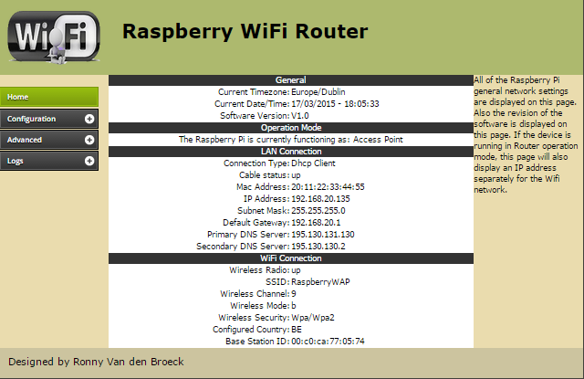

Raspberry-Wifi-Router:
Tweet
Welcome to the Raspberry-Wifi-Router project.
This project aims to build a descent Wifi Router out of a Raspberry Pi which is easily configurable via a dynamic web interface designed in HTML/PHP. This project came to life out of personal interest in hardware embedded design and software design in linux with PHP. I'm putting my desing onto Github to share my work with the open source community, hoping to get some people interested in this project to contribute, the ultimate goal is to create a fantastic web gui for a cheap Raspberry Pi used as Wifi Router.
For the people that are only interested in trying the router, you can download the latest version of the ssd card image below:
The default configuration is set to obtain an IP address via DHCP from the wired ethernet connection.
To access the web interface, enter 'admin' as username and 'raspberry' as password.
To login via SSH, login with username 'pi' and password 'raspberry', and use sudo for root access.
Bridge and Router with NAT functionality
Static/Dynamic addressing
DHCP, DNS Proxy, NTP,
hostapd wifi module
802.11 B/G/N depending on your wifi adapter
Wi-Fi Protected Access® (WPA/WPA2—PSK) and WEP
Captive Portal (coovachilli)
Still to be implemented:
Port forwarding (iptables).
Network Filter (firewall).
Web Filter (privoxy).
Proxy (squid, squidguard).
Advanced wireless configuration (hostapd).
For the ones amongst us that are not scared of entering the matrix, here's how you assemble the ssd yourself:
Getting started:
Before getting started, make sure you have the right equipment at hand:
- Raspberry Pi - Model B - other models might work but are untested.
- SD card from minimal 2 Gb.
- A wifi adapter which has a compatible cfg80211 driver. Go to https://wireless.wiki.kernel.org/en/users/drivers Search for a usb wifi driver which is cfg80211 compatible, and is capable of doing AP and PHY mode B/G/N. Based on that driver, look for a physical device which will work with that driver. This project was developed and tested with an Alfa Awus036NEH Usb Wireless Adapter: http://www.alfa.com.tw/products_show.php?pc=34&ps=22
Preparing your Raspberry Pi:
- For this project I chose to start off with a minimal installation of Raspbian, the Wireless Router should be able to fit on a small sd card.
- I didn't care to build a minimal Raspbian install myself, since there is already a very nice project for this on the net called miniban.
- You can grab an image of their minimal Raspbian OS image from their website https://minibianpi.wordpress.com/ and write that to SD card with win32diskimager to get started.
After booting, we need to resize the partition to 2 Gb to fit the Wireless Router:
- fdisk /dev/mmcblk0
- Then delete partitions with d and create a new with n. You can view the existing table with p.
- p to see the current start of the main partition
- d, 2 to delete the main partition
- n p 2 to create a new primary partition, next you need to enter the start of the old main partition (just press enter), and enter +2G to expand the partition to 2 Gb, Check the p output!
- w write the new partition table Now you need to reboot:
- shutdown -r now After the reboot you need to resize the filesystem on the partition. The resize2fs command will resize your filesystem to the new size from the changed partition table.
- resize2fs /dev/mmcblk0p2
After bootup with your miniban image, login to your Raspberry Pi using root and raspberry as password, then continue the rest of the prep:
- apt-get update
- apt-get -y install git-core
- git clone https://github.com/ronnyvdbr/Raspberry-Wifi-Router.git /home/pi/Raspberry-Wifi-Router
- sh /home/pi/Raspberry-Wifi-Router/installer.sh
- sh /home/pi/Raspberry-Wifi-Router/chillispot.sh
- sh /home/pi/Raspberry-Wifi-Router/login_database.sh